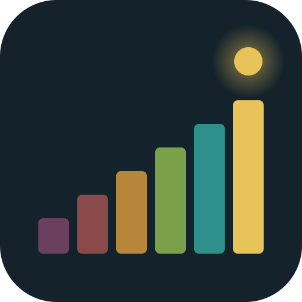

Tangga Kesadaran
Catat dan renungkan level kesadaranmu — kapan saja, berdasarkan Map of Consciousness David R. Hawkins.
Alat ini untuk refleksi diri berdasarkan penilaian jujurmu sendiri. Ia bukan kalibrasi kinesiologi Hawkins dan bukan alat diagnosis. Angka adalah cermin, bukan nilai dirimu.